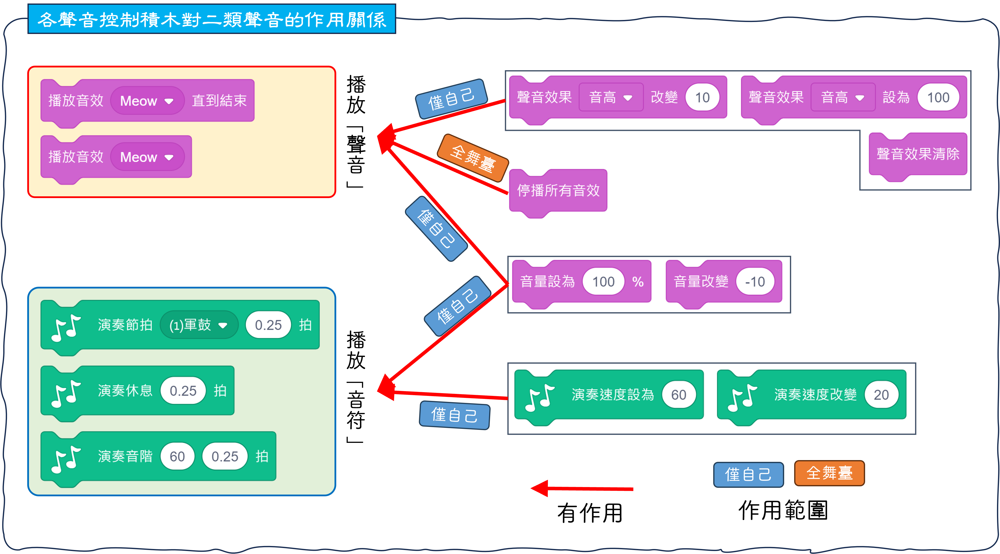

|
|
|---|
 聲 音
聲 音
在Scratch中， 所謂的「聲音」或稱「音效」，指的是由《音效類積木》所執行播放具音軌的『聲音』或由《音樂類積木》所執行播放具旋律節奏的『音符』。前者是角色或背景自帶的音軌播放，後者是內建的合成音符播放。不論是哪一種「聲音」形式，都一定要透過積木來執行才能播放。
①播放『聲音』：這類聲音可以透過Scratch的內置聲音庫、自行錄音或從本地電腦中上傳後使用。可以點擊角色或背景的「音效」標籤來查看，也可以從此處上傳音效聲音或透過聲音編輯器來自行錄音、播放或編輯。
這種就是我們熟悉的帶音軌之聲音，目前Scratch只能接受 MP3 和 WAV格式的聲音文件，而每個聲音檔案的大小上限是10MB並且都是以單聲道來播放。
要播放這種聲音，需要使用〈音效播放〉積木來當成播放器執行播放，若移除掉執行播放的積木時，並不會把該聲音移除。
②播放『音符』：這類聲音與上述最大的差別在於，它不會出現在角色或背景的音效清單窗格中，它不屬於角色或背景的一部分，它本身是附在《音樂類積木》上，角色或背景只是藉由執行這些積木來發出聲音的。所以，當你把這些積木除除掉後，該聲音也就會跟著不見了。
這種『音符』又分成「有音階旋律的樂器」的和「沒有音階的節奏樂器」的。
以上二種類型的「聲音」，都可以透過《音效類積木》中的〈設定音量值〉積木和〈改變音量值〉積木來調整聲音的大小。
以下是各聲音控制積木對二種「聲音」類型的作用關係圖。
